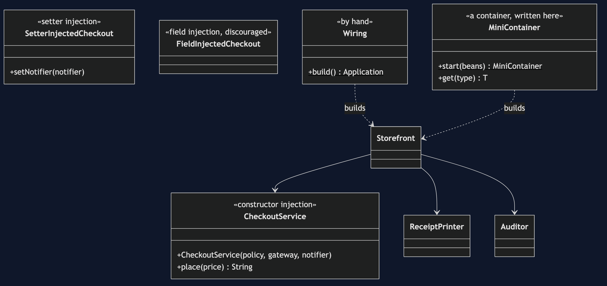
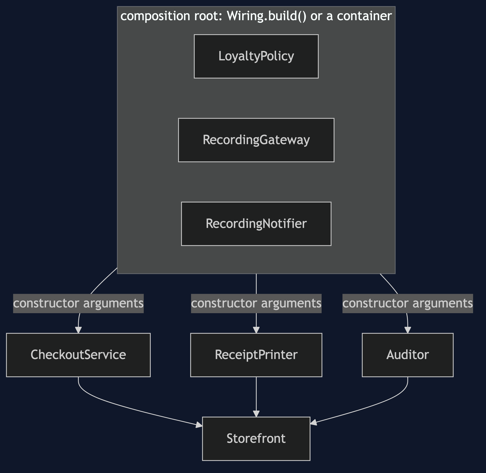
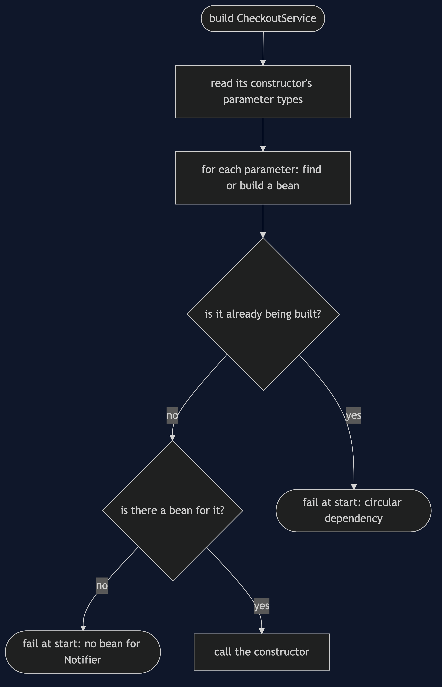
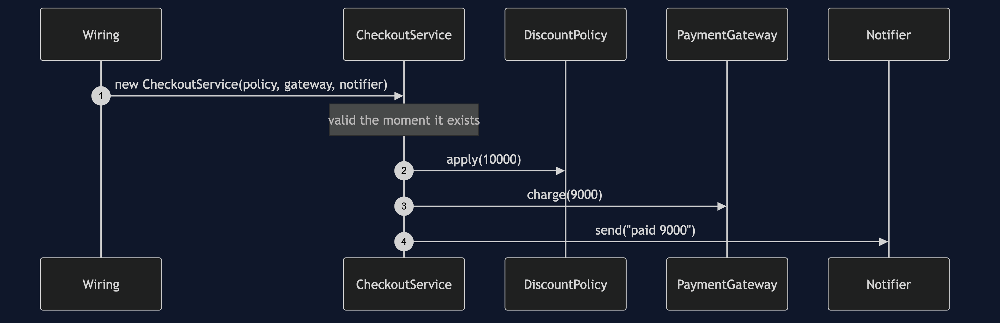
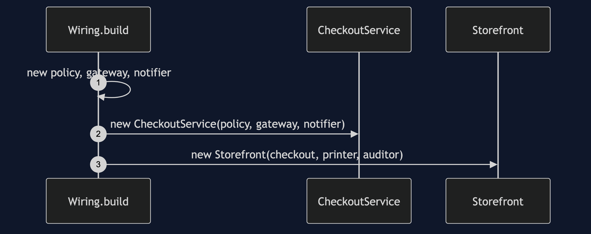
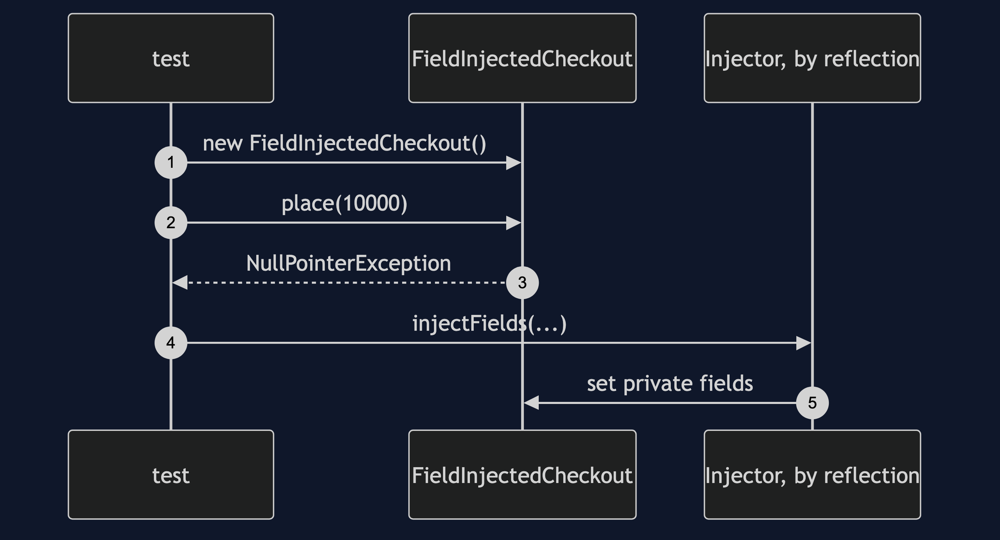
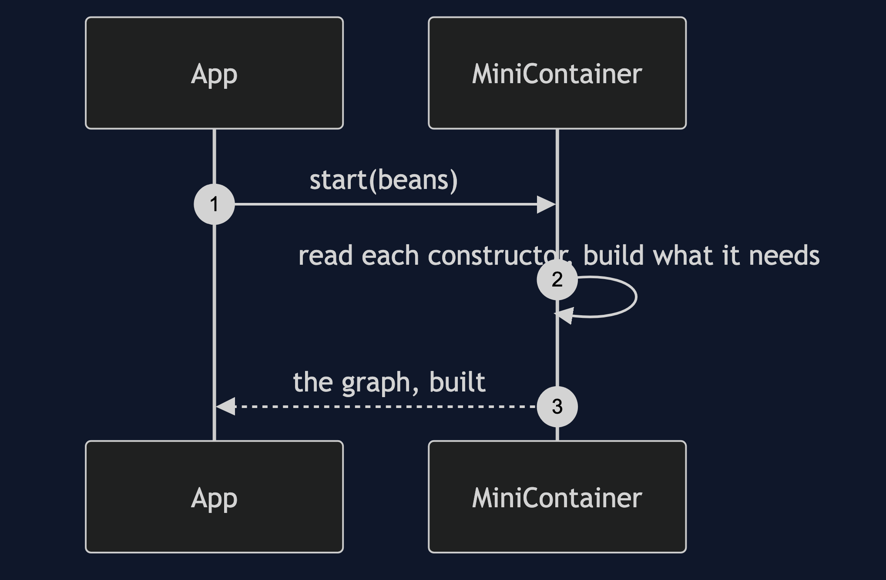
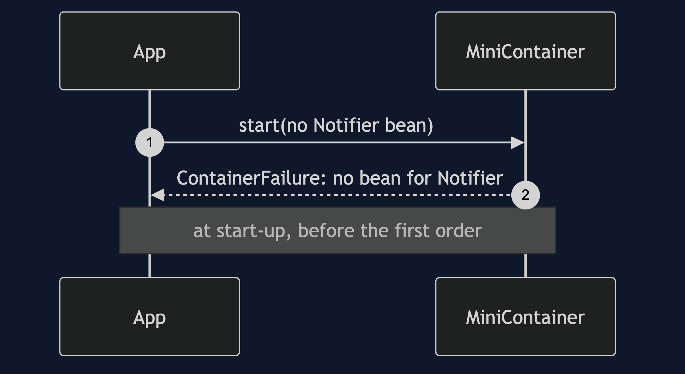

Dependency Injection Pattern
src/main/java/com/jk/explore/dependencyinjection/
├── WiringDemo.java composition root — the six acts
│
├── domain/ ← the same three collaborators as the neighbouring projects
│ ├── DiscountPolicy.java LoyaltyPolicy.java
│ ├── PaymentGateway.java RecordingGateway.java
│ └── Notifier.java RecordingNotifier.java
├── app/ ← classes that are given what they need
│ ├── CheckoutService.java constructor injection: the signature is the dependency list
│ ├── ReceiptPrinter.java Auditor.java Storefront.java
│ └── OverloadedService.java seven collaborators: a design smell
├── wiring/
│ └── Wiring.java the whole application, built by hand
├── forms/
│ ├── SetterInjectedCheckout.java for genuinely optional things
│ └── FieldInjectedCheckout.java discouraged, and why
└── container/ ← what a container does, written here
├── MiniContainer.java builds the graph from constructor parameter types
├── Injector.java field injection by reflection
└── ContainerFailure.java Chicken.java Egg.java start-up failuresDependency injection: a class declares what it needs in its constructor and is given it. It never looks anything up.
This is the last of five projects in foundational-design-patterns, and it closes an argument. Registry put things in a known place. Service Locator made a middleman that could find them. Dependency Injection stops the class asking at all. All three use the same three collaborators. Dependency injection is not Spring: the wiring is shown by hand first, and a small container is written here, so a container is something you have seen built, not something you take on trust.
Run
./gradlew runSix acts. The same three collaborators as Registry and Service Locator, so all three can be compared directly.
DEPENDENCY INJECTION — stop asking; be given
ONE. The signature is the dependency list.
CheckoutService(DiscountPolicy, PaymentGateway, Notifier)
that is everything it needs: complete, and checked by the compiler.
new CheckoutService() does not compile. there is no way to forget a collaborator.
it never looks anything up, so nothing is hidden, and it is valid the moment it exists.
TWO. The wiring, by hand, before any framework.
the whole application is built in 9 lines of plain Java (blank lines included), in one place.
it ran: charged [9000], messages sent 3.
a container is an optimisation of something you can write yourself.
THREE. Three forms: constructor, setter, field.
setter: for genuinely optional things. no notifier was set, and the order still worked: [9000]
field: new FieldInjectedCheckout() compiled, and is invalid. placing an order threw NullPointerException.
it only works once something reaches into its private fields by reflection: receipt-1
recommendation: constructor injection. mandatory, visible, and valid on creation.
FOUR. A container, written here, in 86 lines.
it read each constructor's parameter types and built the same graph as the hand wiring.
charged [9000], the same as before.
that is all Spring, Guice and Dagger do, plus scanning, scopes and a great deal of polish.
FIVE. The bill.
a bean missing, when the container starts:
could not construct CheckoutService: no bean for its parameter of type Notifier
a circular dependency, when the container starts:
circular dependency: Chicken -> Egg -> Chicken
better than Service Locator: it fails at start-up, not on the first order. still not at compile time.
and a class whose constructor takes 7 things has a design problem no injection style fixes.
by hand the wiring grows with the application. that is what a container is for.
SIX. The progression, and the verdict.
Registry put things in a known place. Service Locator made a middleman that could find them.
Dependency Injection stopped the class asking at all.
verdict: use constructor injection, by hand until the wiring hurts, then a container.
dependency injection is not Spring. you have just done it in plain Java.
where you have met this: @Component and a constructor parameter, in Spring; @Inject in Guice and Dagger.Test
./gradlew test2 test classes, 10 test methods, offline, with nothing installed and no framework.
Technologies and versions
| What | Version | Why it is here |
|---|---|---|
| Java | 21 | The repository standard, via the Gradle toolchain block |
| Gradle | 9.2.1 | The wrapper in this directory; no separate install needed |
| JUnit 5 | 5.10.2 | Test runner |
No framework. A hand-built project stays plain Java so the mechanism is the whole lesson.
Learning Material
| Document | What it covers |
|---|---|
docs/problem-statement.md | The same checkout, one more time |
docs/dependency-injection-pattern-explained.md | The pattern, three forms, a container written here, and the verdict |
docs/class-diagram.md | The types |
docs/architecture-diagram.md | One place builds; everything else is given |
docs/data-flow-diagram.md | How a container builds a bean, and where it fails |
docs/sequence-diagram.md | Written for a listener with the screen off |
docs/uml-diagram.md | Four sequences |
docs/animation.html | The six acts in a browser |
docs/prerequisites.md | What you need to know |
docs/session.md | A one-hour taught session |
docs/spec.md | The generated specification |
docs/youtube.md | Title, description and chapters |
The pattern in one picture

Where each piece sits

How one request moves

Who calls whom, in order

All four sequences




Video
Built from video/scenes.py by video/build_video.sh. The rendered file is not committed; see the repository README for why.
Where you have already met this
In every Spring Boot application, where constructor parameters and @Component do what Wiring.build() does by hand. @Inject does the same in Guice and Dagger.
When this is too much
Never for the idea. A container is too much for a small application that fits in main.
Where this sits
This is the last of five projects in foundational-design-patterns. It closes the argument begun in Registry and continued in Service Locator.
Also available with a framework
Dependency Injection with Spring Pattern reruns this idea on a real framework, and shows what the framework adds and where it can undo the pattern. Watch this project first.